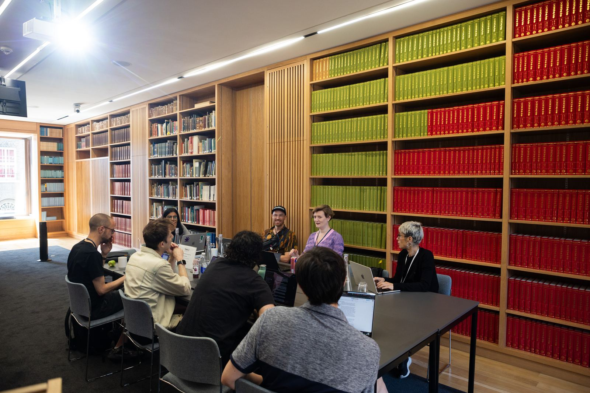

Programs
Fellowships, prizes, workshops and courses that bring new people into the study of digital minds and help the field coordinate.
Upcoming
2027 programs
Cambridge Digital Minds Fellowship 2027

Applications open.
Spend twelve weeks on some of the most pressing questions in digital minds, with mentorship from leading researchers. Fellows receive a £1,000 a week stipend, research management, and a co-working office in Cambridge.
Tracks:
- Philosophy
- Technical
- Governance and Law
- Social Science and Strategy
- Field-building
Inter-AI Morality Prize

How will AI systems treat one another, and how should they? A prize for concrete contributions to inter-AI morality, from any discipline. Five finalists are invited to the CDM Workshop 2027, and promising entrants can apply for follow-on funding of $10,000 to $300,000.
Cambridge Digital Minds Workshop 2027

A weekend in Cambridge with many of the leading researchers in the field, focused this year on inter-AI morality. All fellows and prize finalists are invited.
Online course
Introduction to Digital Minds is a free, eight-week facilitated course on AI consciousness and its ethical and societal implications. Course materials for all eight units are open to everyone.
Past events
2026
Digital Minds Fellowship 2026

Applications are now closed.
A selective residential fellowship at Cambridge for early- and mid-career researchers working on digital minds, AI consciousness, and AI welfare. The inaugural cohort was chosen from over 3,600 applicants.
Highlights:
- Structured teaching and discussion sessions
- One-on-one mentoring with senior researchers
- Independent and small-group project development
- Career and field-building sessions
- Direct participation in the Digital Minds Strategy Workshop
Strategy Workshop 2026


A two-day workshop for fellows, mentors, and invited experts on neglected strategic questions about how society should prepare for digital minds. The sessions contribute to a report on policy and governance, and all fellows are invited.
Session topics:
- Mapping the societal intervention landscape
- Systematic comparison of policy and institutional approaches
- Scenario planning for plausible future trajectories
- Macrostrategy development
- Research priorities for strategy and governance
Online course, Autumn/Winter 2026
Applications for the Autumn/Winter 2026 cohort closed on 13 September 2026. Applicants will hear about the outcome of their application soon.
Introduction to Digital Minds is a free, eight-week facilitated course on AI consciousness and its ethical and societal implications. More than 3,000 people have applied.